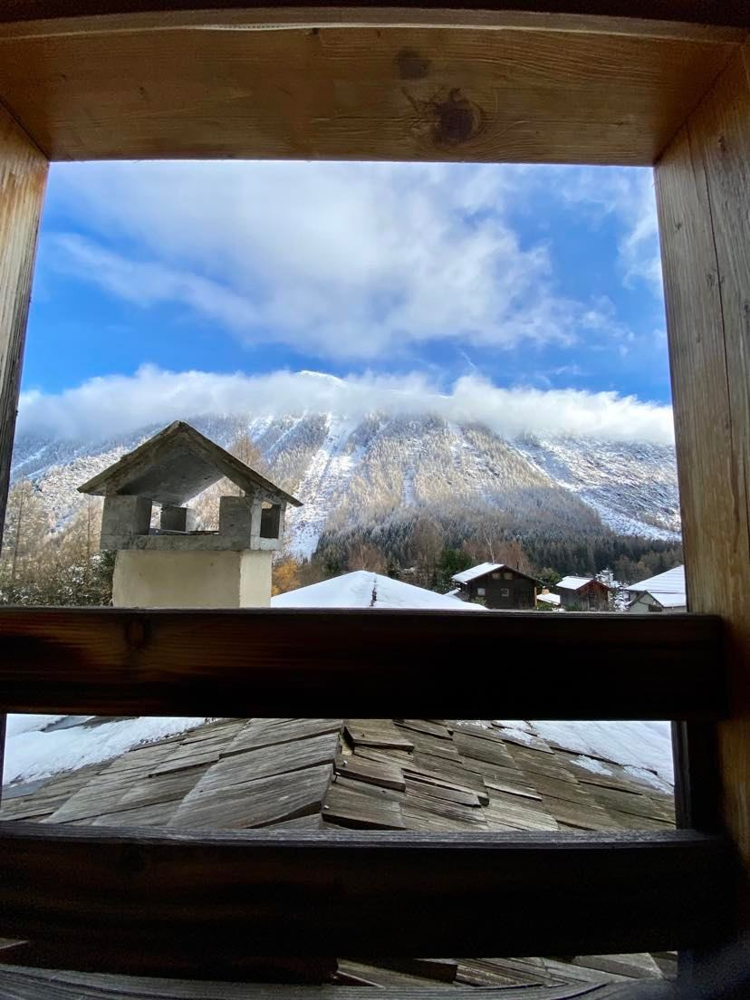
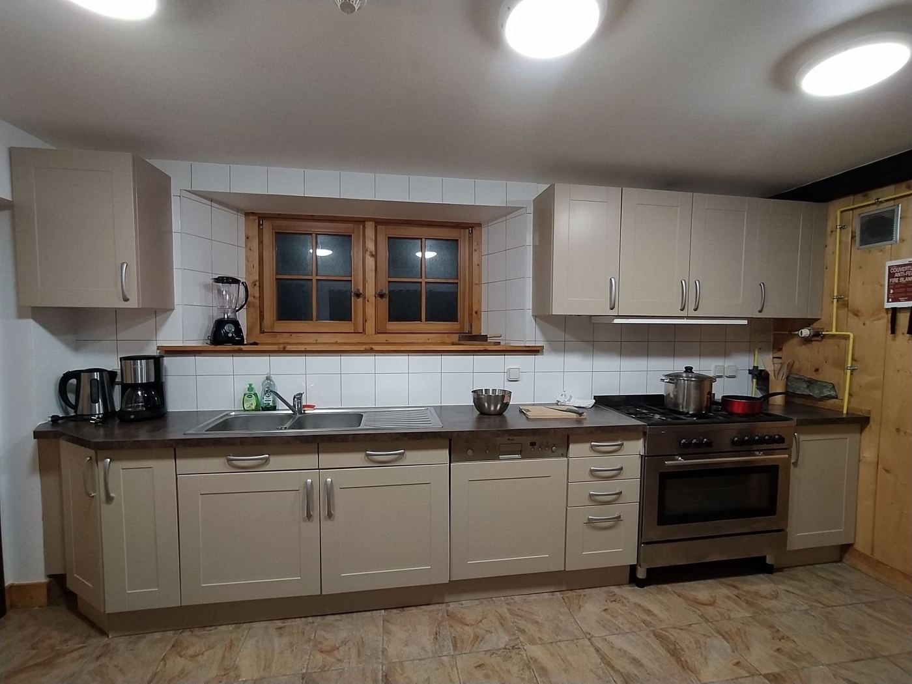
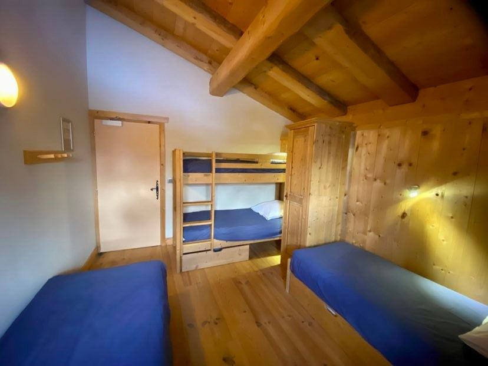

Photos : Chalets de Vacances en Montagne
Combien de lits, et où ?
Quinze lits simples, répartis en une chambre et trois dortoirs. La répartition se fait ensemble en arrivant.
La chambre
2 lits simplesDortoir 1
5 lits simplesDortoir 2
4 lits simplesDortoir 3
4 lits simplesEn tout : 15 couchages — le gîte est privatisé, personne d'autre n'y dort.
Une vraie maison de montagne
Le gîte est en gestion libre : on fait les courses et on cuisine nous-mêmes, dans une cuisine équipée, autour d'une grande table.
Les horaires
- Arrivée : accès possible dès 17h, mais on arrivera plutôt entre 23h et 1h
- Fin de séjour : avant 10h le dimanche — on libère le gîte au matin, puis on part skier
- Capacité : 15 personnes maximum
Fourni par le gîte
- Draps housses
- Oreillers et taies
- Parking gratuit
À apporter
- Sac de couchage, ou couette et housse
- Linge de toilette (non fourni)
- Les courses du week-end
- Des appareils à raclette
Sur place
- Cuisine équipée et grande table
- Salon avec banquettes
- Local à skis et à chaussures
- Salles d'eau
Vallorcine, tout au bout de la vallée
En voiture
Plusieurs voitures partent de Paris ou d'ailleurs le vendredi vers 17h-18h, pour une arrivée entre 23h et 1h. Compter 6 à 7 heures de route, sans tunnel du Mont-Blanc. Parking gratuit au gîte. Les conducteurs se signalent et les frais sont partagés — voir le budget.
En train
Le gîte est proche des gares de Vallorcine et du Buet, desservies par le train de la vallée. Une option pour qui n'a pas de place en voiture à étudier.